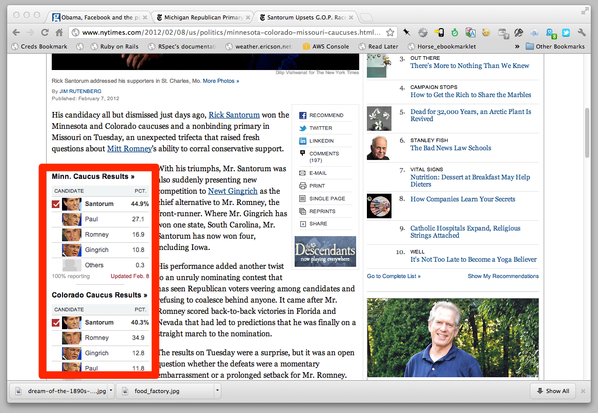

INFECT THE CMS
Inevitable Conflict
- Your apps are built from data
- The CMS is built from words
- This is the source of our problem
The Realm of Data
The Realm of Words
What's Wrong With This?
Methods of Coping
- Faking It
- Infecting the CMS
- Wresting Data from the CMS
- Acceptance and Inner Peace
Faking It
TK Slide that looks like a newspaper page
How To Fake It
- IFrames
- Code libraries that fake the look
- Staying in sync
- Javascript conflicts
Code snippets
Infecting the CMS
Code Example
js = function({
foo();
});